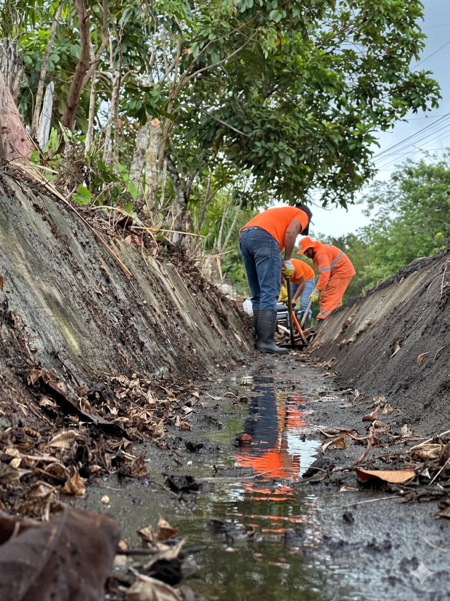

Nuestros Servicios
Soluciones ambientales integrales para tu negocio y comunidad
Especialistas en gestión de residuos sólidos aprovechables para sector industrial, comercial y residencial.
Conecta con nosotros
Limpieza y Mantenimiento de Bermas
RECOVEN SAS presta el servicio de limpieza y mantenimiento de bermas, áreas verdes y zonas perimetrales, contribuyendo a la conservación del entorno, la seguridad vial y el control de residuos sólidos en espacios públicos y privados.
- Limpieza de zonas perimetrales
- Mantenimiento de áreas verdes
- Control de residuos en vías públicas
- Conservación del entorno y seguridad vial
Código de Colores
Más que una obligación, reciclar es una necesidad.
Residuos Aprovechables
- Plástico
- Cartón
- Vidrio
- Papel
- Metales
Residuos Orgánicos Aprovechables
- Restos de comida
- Desechos agrícolas
Residuos No Aprovechables
- Papel higiénico
- Servilletas
- Papeles contaminados
- Papeles metalizados
Para Reciclar
En RECOVEN SAS promovemos la correcta separación en la fuente como base fundamental del aprovechamiento de residuos. Una adecuada clasificación permite:
Más material reciclable
Aumenta el porcentaje de residuos que pueden volver al ciclo productivo.
Menos contaminación
Reduce el impacto ambiental negativo en suelos, agua y aire.
Mejor calidad
Mejora la calidad del material aprovechado para su reutilización.
Optimiza la ECA
Optimiza los procesos de la Estación de Clasificación y Aprovechamiento.
Planes Parciales de Desarrollo
Formulación de planes parciales de desarrollo municipal, regional y nacional.
Proyectos Ambientales
Formulación de proyectos ambientales municipales, departamentales y nacionales.
Educación y Cultura Ambiental
Proyectos de educación y cultura ambiental.
Proyectos Agropecuarios
Diseño y asistencia en proyectos agropecuarios y agroindustriales sostenibles.
Residuos en Obras Civiles
Gestión de residuos sólidos aprovechables para construcciones, viviendas y obras civiles.
Certificados de Disposición Final
Emisión de certificados de disposición final de residuos aprovechables.
Asesoría en PGIRS
Asesoría en implementación y actualización de PGIRS.
Nuestras Bodegas ECA
Contamos con instalaciones propias para la clasificación y disposición final de residuos.
ECA de Residuos Aprovechables Residenciales
Estación de Clasificación y Aprovechamiento especializada en el manejo de residuos sólidos aprovechables provenientes del sector residencial: viviendas, conjuntos y urbanizaciones.
- Clasificación y segregación de materiales
- Plástico, cartón, vidrio, papel y metales
- Emisión de certificado de aprovechamiento
Disposición Final de Residuos Industriales
Instalación especializada en la recepción, clasificación y disposición final de residuos industriales aprovechables, con capacidad para grandes volúmenes y vehículos de carga pesada.
- Residuos industriales aprovechables
- Materiales ferrosos y no ferrosos
- Certificado de Disposición Final empresarial
¿Listo para gestionar tus residuos?
Contacta a nuestro equipo y recibe una propuesta personalizada en menos de 24 horas.